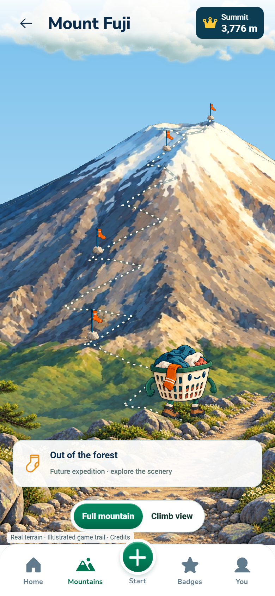
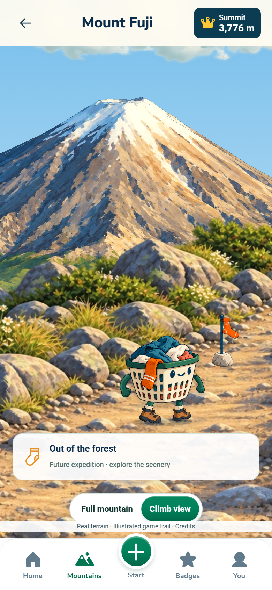
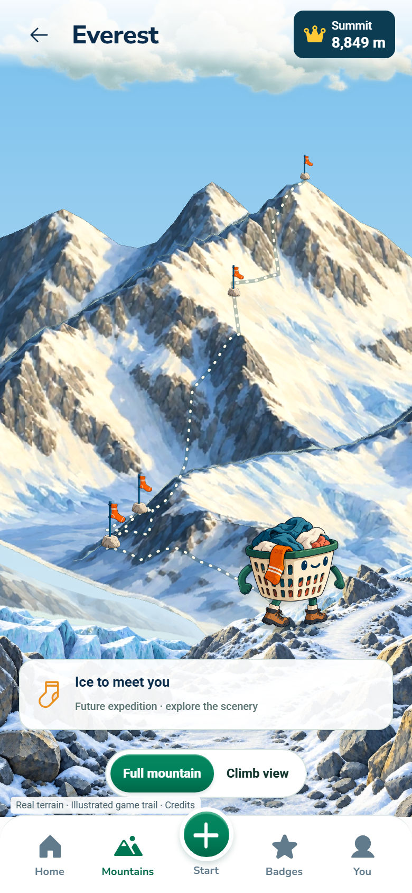
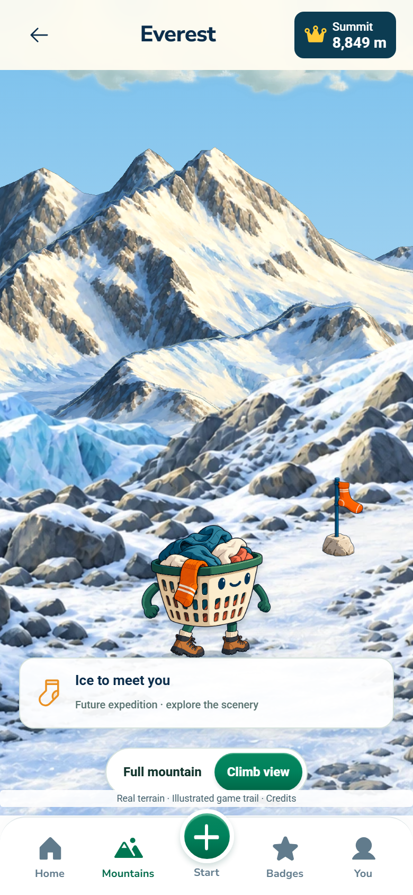
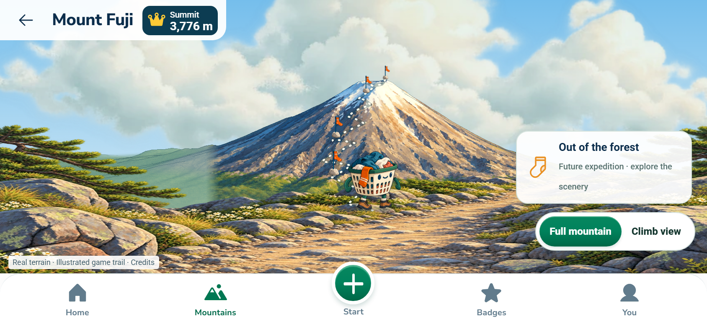
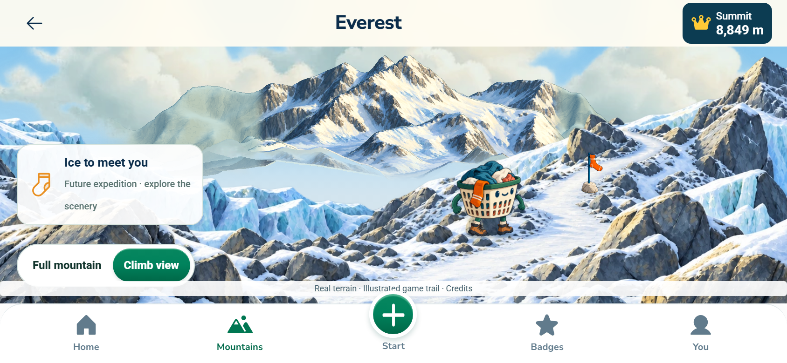

Fuji and Everest · actual app captures · scenery previews, with gameplay progression still to connect.






Ben Nevis and saved sessions preserved. Terrain, game trail, foreground and basket remain separate layers. No deployment.